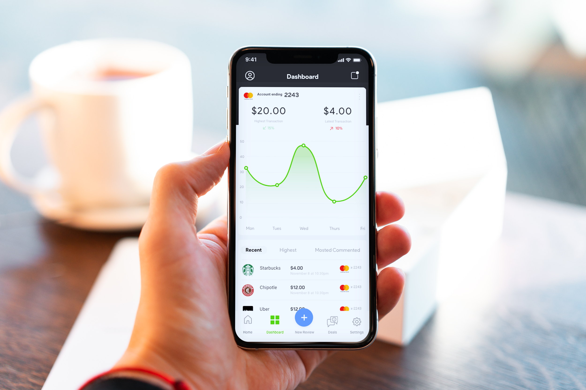
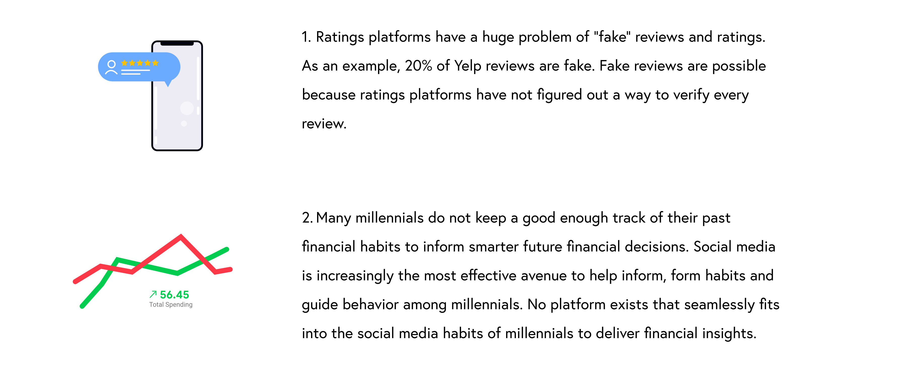
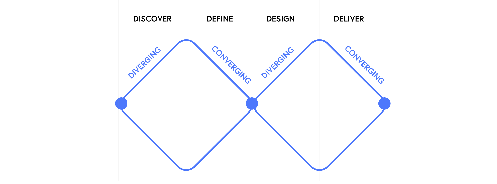
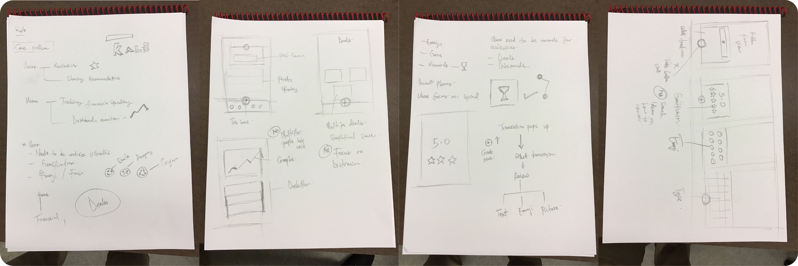
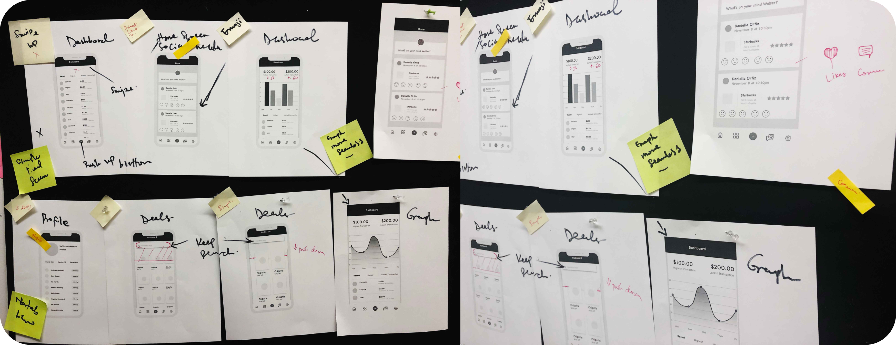
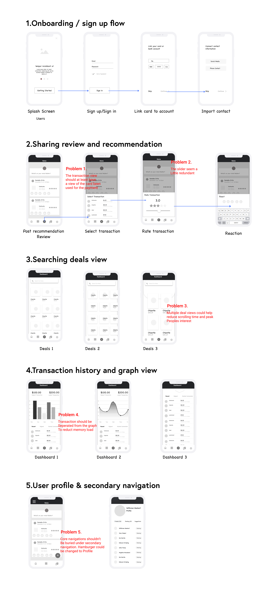
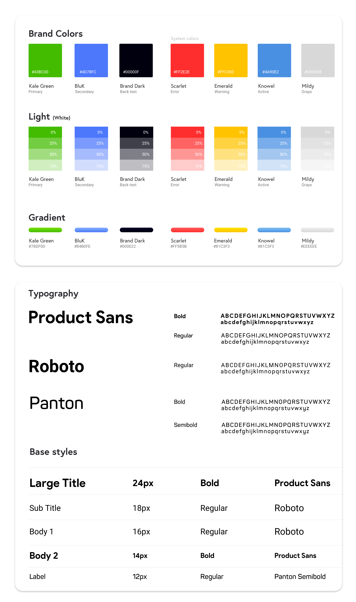

Overview
Kale is a platform that lets users rate and make
recommendations about the things they pay
for with friends and other followers and have fun
while doing so.
Client
Getkale.ioTeam
1 Product manager, 2 User researchers ,1 UI/UX designerRole
Visual Design / UX .- User research
- Visual design
To comply with my non-disclosure agreement, I have omitted and changed confidential information in this project. The designs presented here may differ slightly from the original, and do not necessarily reflect the views of getkale.io.

Objective
With a vision pivot towards mobile and a niche, millennial market getkale.io wanted to scale down their product into an app to reach more audience. Though the MVP garnered 100s of users, it’s retention rate was very poor. Users found the platform not entertaining and engaging enough when quizzed. The spending graph was also not insightful enough which was somewhat frustrating.
The Problem

My Role
My core role on the project was to synthesize and translate the initial research and testing on the MVP, which was web browser-based, into a mobile app. I handled the end-to-end UI design, design system formulation and clarifying the visual experience of the product to some stakeholders. Working with two researchers and one product manager in an agile workflow, I had to approach each stage as a product designer. My role morphed into playing diverse roles on the team beyond the visual experience designer I was initially brought on for. The team employed a double diamond process framework which I briefly illustrate below.

Research
I lead the team to conduct quick usability testing with friends and colleagues who had never used the platform before. Participants were asked to complete 3 three core tasks with a prototype that was created from the wireframes. Participants were also requested to give general feedback on the information layout and the features they desire to have experience on each screen.


Wireframes & User testing
I lead the team to conduct quick usability testing with friends and colleagues who had never used the platform before. Participants were asked to complete 3 three core tasks with a prototype that was created from the wireframes. Participants were also requested to give general feedback on the information layout and the features they desire to have experience on each screen.

Color & Typography
